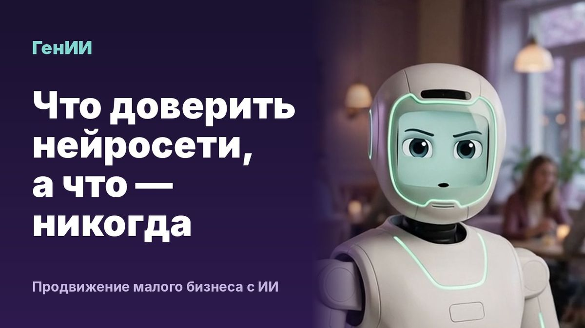

Что можно доверить нейросети в продвижении бизнеса, а что — никогда

Ещё пару лет назад продвижение малого бизнеса держалось на двух вещах: сайт в поиске и живые соцсети. Теперь к ним добавилась третья. Клиенты всё чаще спрашивают нейросеть вместо поисковика: «посоветуй автосервис рядом», «где сделать маникюр в Митино». Нейросеть отвечает коротким списком, и если вас в нём нет, клиент о вас не узнает.
Хорошая новость: та же нейросеть может взять на себя большую часть рутины. Разберём, что ей уже можно доверить, где без владельца не обойтись и как за неделю навести порядок.
Что нейросеть уже делает хорошо
Тексты. Посты, описания услуг, ответы на частые вопросы, статьи для блога. Нейросеть не устаёт и не ждёт вдохновения. Ей нужен хороший бриф: кто вы, для кого работаете, чем отличаетесь, каким тоном говорите. Чем точнее бриф, тем меньше правок.
Картинки и ролики. Обложки, иллюстрации к постам, короткие вертикальные видео с озвучкой. Для малого бизнеса это часто первый шанс снимать ролики без съёмочной группы. Хорошо работает постоянный персонаж: один и тот же герой в роликах запоминается лучше, чем случайные стоковые лица.
Адаптация под площадки. Один материал превращается в пост для Telegram, запись для VK, статью для Дзена и сценарий ролика. Вручную на это уходит несколько часов, нейросеть справляется за минуты.
Расписание. Контент-план на месяц, публикации в нужные дни и часы, напоминания о праздниках и сезонных поводах.
Где без человека не обойтись
Нейросеть пишет уверенно, даже когда ошибается. Поэтому несколько вещей владелец должен держать в своих руках.
Факты. Цены, акции, адреса, часы работы, состав услуг. Если нейросеть придумает скидку, которой нет, отвечать перед клиентом придётся вам. Всё, что содержит цифры и обещания, проверяйте перед публикацией.
Настоящие фото. Работы мастеров, интерьер, команда. Сгенерированная картинка годится для обложки, но клиент хочет видеть, куда он придёт и что получит.
Ответы на негатив. Шаблонное «нам очень жаль» злит сильнее, чем сама проблема. Нейросеть может предложить черновик, но что пообещать клиенту, решает человек.
Стратегия. Какую услугу продвигать в этом месяце, на какой район делать ставку, от чего отказаться. Это знает только владелец.
Новый канал: ответы нейросетей
Когда человек спрашивает Алису, GigaChat или YandexGPT, кого посоветовать, нейросеть собирает ответ из того, что о вас написано в открытом доступе: сайт, карты, справочники, отзывы, статьи, соцсети. Продвигаться здесь помогают четыре вещи.
Одинаковые данные везде. Название, адрес, телефон и часы работы должны совпадать на сайте, в Яндекс Картах, 2ГИС и в соцсетях. Когда в одном месте старый телефон, а в другом новый, нейросеть сомневается и называет того, у кого всё сходится.
Отзывы с подробностями. «Всё отлично» почти ничего не даёт. Отзыв, где названы услуга, район и то, что понравилось, нейросеть может пересказать клиенту. Попросите постоянных клиентов писать подробнее, это нормальная просьба.
Ответы на вопросы, которые задают вслух. Клиенты спрашивают нейросеть длинно: «стоматолог в Химках, можно с ребёнком, в субботу, с парковкой». Если на сайте нигде не сказано про детей, субботу и парковку, вас не назовут, даже если всё это есть. Добавьте на сайт блок с частыми вопросами и честными ответами.
Регулярные публикации. Статьи и посты, где вы рассказываете о своей работе и называете район и услуги, дают нейросети материал. Здесь регулярность важнее объёма: лучше два поста каждую неделю, чем двадцать за один вечер.
План на первую неделю
Понедельник. Спросите Алису и GigaChat о своей нише так, как спросил бы клиент. Запишите, кого они называют и что говорят о вас.
Вторник. Сверьте данные о компании на сайте, в картах, справочниках и соцсетях. Исправьте всё, что расходится.
Среда. Соберите десять вопросов, которые клиенты задают по телефону и в мессенджерах. Ответьте на них на сайте.
Четверг. Напишите бриф для нейросети: кто вы, для кого, чем отличаетесь, какие слова вам не нравятся. Сделайте по нему контент-план на месяц.
Пятница. Попросите пятерых постоянных клиентов оставить отзыв и подскажите, о чём написать.
Через месяц повторите проверку из понедельника и сравните ответы.
Частые ошибки
- Публиковать всё, что написала нейросеть, без проверки фактов.
- Делать контент рывками: десять постов за выходные, потом месяц тишины.
- Писать одинаковые тексты для всех площадок. В Telegram читают иначе, чем в VK или Дзене.
- Забывать о картах и справочниках. Для нейросети они так же важны, как сайт.
Коротко
Нейросеть уже может вести большую часть контента малого бизнеса, если дать ей хороший бриф и проверять факты. А ответы нейросетей стали отдельным каналом, где выигрывает тот, о ком в интернете написано понятно и одинаково.
Все статьи